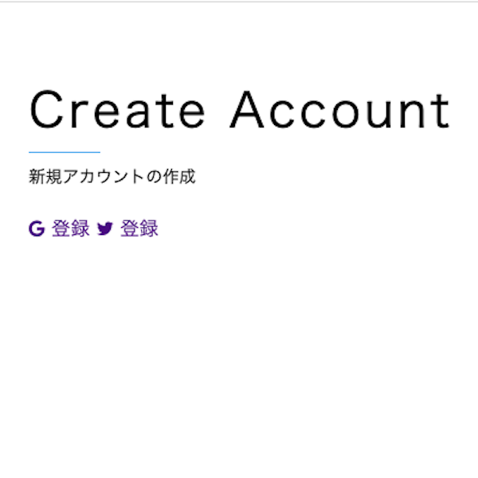
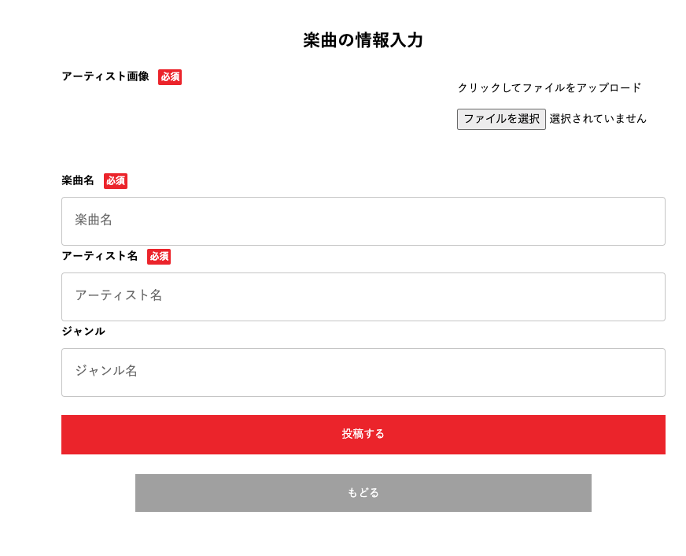

Best Music One (音楽共有サイト)
開発環境
Ruby / Ruby on Rails / MySQL / GitHub / Heroku / Visual Studio Code / jQuery
-
概要
制作時間 80時間 URL https://best-music-one-38146.herokuapp.com/ ID test1122 PASS 1234 -
動作テスト
テスト用アカウント
mail test1@test.mail PASS tete1578
OUTLINEアプリケーションの概要
オリジナルアプリケーションとして、自身の趣味を共有をするSNSを開発しました。
主な機能は、ユーザー登録機能、アーティスト検索機能、楽曲の投稿、編集、削除機能、楽曲のアーティストページ、他ユーザーの楽曲にお気に入り機能です。
投稿された楽曲の詳細ページへアクセスすると、楽曲の情報としてジャンル、楽曲のプレビューが視聴することができます。
-
開発に至った経緯
音楽が好きだが、曲が自身の今まで聴いてきたアーティストや曲に偏りがあるという課題があることが判明しました。
課題を分析したところ、「好きな曲を共有する場所が欲しい」、「他の人はどんな曲を聴くのか気になる」ということが挙がりました。
気軽に自身の好きな曲を共有できる場所として、音楽共有アプリケーションを開発しようと至りました。
-
開発で工夫したこと
1つ目がSNS認証でのアカウントログイン機能を実装を行い、簡単にアカウント作成、ログインができるようにしたことです。
2つ目がお気に入り機能を非同期通信での実装を行ったことです。画面遷移することなく、お気に入りのボタンが押せます。
-
今後実装したいと思っていること
楽曲を投稿時にタグ付けをする機能を設けたいと考えています。
理由として、1つ目が、検索機能を実装し見つけやすさを取り入れたいからです。
2つ目が、ジャンル別で楽曲を見つけ出せるようにしたいからです。